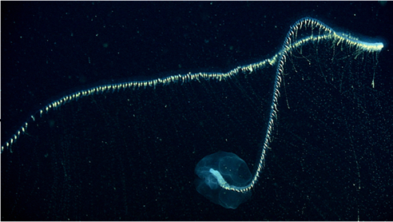

СЕМЕЙСТВА принадлежит к семейству Prayidae и отряду Siphonophorae
ГЛУБИНА:от 600 до 2300 метров.
КОГДА ОТКРЫЛИ: 6 апреля 2020 года в подводных каньонах близ побережья Нингалу
ТИП ПИТАНИЯ:плотоядные хищники.
Обитают в морских глубинах на глубине от 600 до 2300 метров. Если поднять сифонофору на поверхность, она не выдержит перепада давления и погибнет
Движутся за счёт двух увеличенных округлых нектофоров.
Обладают биолюминесценцией — способностью светиться в темноте. Это помогает привлекать и ловить добычу. Используют тактику засады в районах с низкой концентрацией пищи: сидят и ждут, пока добыча проплывёт мимо, прежде чем усмирить её.
Некоторые сифонофоры ловят добычу с помощью мимикрии: используют биолюминесценцию, чтобы заманить, оглушить или сбить с толку добычу, и имитируют её общее поведение при плавании, прежде чем ужалить.
Сифонофоры размножаются бесполым способом — почкованием. Новые колонии образуются путём полового размножения. Каждый зооид в колонии произошёл от одной яйцеклетки, оплодотворённой извне, поэтому их генетический состав идентичен.

наверх